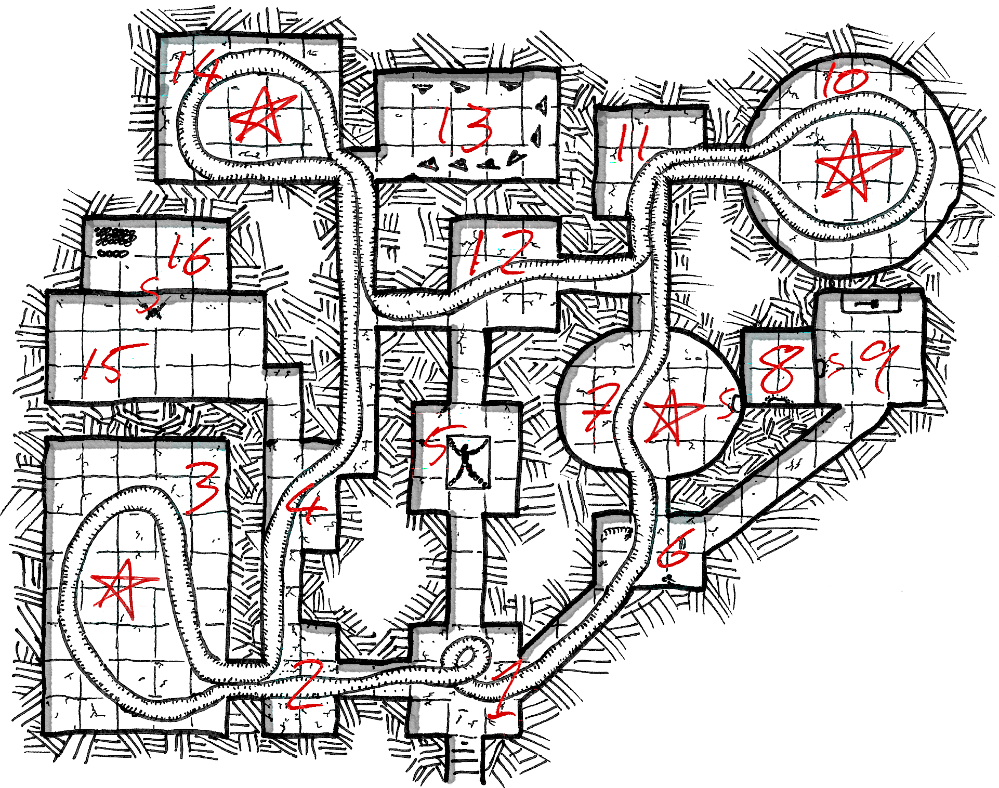

Maps by Roz Leahy
The people of Knartu and Rhus speak Rhus and Norse.
Roll 1d8 at commencement of play.
For all weather rolls, add +1 if in Kark, Abhaus or Argadnel. After this, roll 1d6, and:
- If the previous days score was 2 or less, -2 to the dice roll.
- If the previous days score was 5 or more, +2 to the dice roll.
| # | Weather |
|---|---|
| -1 | Very Hot. |
| 0 | Hot. |
| 1 | Warm. |
| 2-3 | Overcast. |
| 4 | Fog. |
| 5 | Light Rain. |
| 6-7 | Heavy rain. |
| 8+ | Storm. |
Rain and Storms have a 5% chance of being Snow - doubled in the mountains. Consecutive results continue to be Snow.
Within a crease upon the seacliff the ruins of Holmsbúð lie. The jetty and path are crumbling and choked with vegetation, but mark the erstwhile settlement still. The houses, long, wooden, given over to rot, flank this path - no sign of animal tracks nor spoor. Within each the slow decay of years - no bodies, no devastation. The path is interrupted by the remains of a gate, smashed in. Beyond it, walled by stone, a narrow clearing dominated by the surrendered hall marking the centre of Holmsbúð. No fire burns within - the dwellers sneer at such luxuries.
Hjalmar, a Troll-king, able to speak and wield tools, sits upon the throne he took by force. He wields a Two-Handed Axe and wears Full Length Maille. Around him, his four siblings - each too having left mortality behind. Each holds a sword, despite the pain it causes them, and wears a shield. Their tongues are tattered ribbons. The floor of the hall is littered with gnawed bones, cracked open and drained. Hjalmar wants he and his family fed first - then a boat to leave this isle, stripped bare of edible life. He deals dishonourably.
Displayed proudly, the plundered wealth of the Trolls (Monstrous III):
Visible from the sea, atop the tallest hill on the isle - a grey stone stele, rounded to a near-pillar by age. Whatever inscription it once had has been worn to vague patterning. From this high point, the stone mound in 29.08 is visible.

Between the trees and hills, heaped stone forms a large mound with an opening. The opening is narrow, admitting only a single person without a pack at a time. Within there is barely room to stand. A set of worn stone steps clad in moss leads downward. An acrid chill rises from the stairs.
The walls and floor are made of small, worked stones - moss and lichen coating much the stone, and filling the gaps between. It is lightless, and the roof is only 7ft high.
The Purple Worm trapped in this complex is huge, coils spread throughout, moving sluggishly. In corridors, movement is possible if slow are careful - only 1.5’ of clearance is afforded. The head of this creature starts in (1d4): 1) Room 3, 2) Room 7, 3) Room 10, 4) Room 14.
If unaware of the party:
If aware of the party:
1
This chamber is bisected by stacked coils of deep-purple flesh, simultaneously fleshy and scaled - weeping a clear serum which pools on the floor, connected to the bulk by long sticky strings. This serum is lethal to humans - those touching it with naked skin die over 24 hours of agonising muscle cramps. A Physique Save avoids death, but the muscle cramps remain. Beneath the serum, dead moss.
The heaped worm-flesh stands 4 ft tall, moving slowly. On the walls, Norse-style carvings of skeletal legions and burning forests.
2
A double-coil of worm-flesh, exiting and re-entering the room through the Western doorway. The stones in here are damaged, cracked from a huge impact.
3 [1 hour+ after being eaten by the Worm]
The coils of the worm surround a resplendent tree bearing golden fruit. The entire thing is visibly, and audibly, growing. It grows crooked against the ceiling, spreading out as if seeking escape. The fruit smells delicious - eating it cures disease. Plucked, it keeps only for day, being ever-ripe and on the cusp of rot. 3 [>1 hour after being eaten by the Worm.]
The coils of the worm surround a ravaged sapling. The entire thing is visibly, and audibly, growing. It has clearly been broken, torn and chewed, broken edges bleeding sap and ringed with fresh green growth. Serum from the worm surrounds it, but does not seem to effect it.
3 [being eaten by the Worm.]
A sucking, tearing sound comes from the eyeless head of the worm as it devours an impossible tree, great boughs bearing golden fruit grasped and shovelled into the lipless mouth. Roots are torn up, branches ripped down. The worm in feed does not notice intruders, but will finish it’s meal in minutes.
4
Worm-flesh runs South-to-North, obscuring carvings of warriors holding their spears aloft. Only the tips of their weapons can be seen.
5
A beam of sunlight from a hidden skylight pierces the gloom, shining on the face of a corpse bound in chain to a raised plinth. A tongue, dried to leather, has been nailed to it’s chest. On the plinth has been carved, in Old Norse (intelligible if archaic to readers of Norse) “Thou breaker of Oaths are condemned to silence and restless Sleep Eternal.” If noise is made, the corpse will try and turn to eyelessly stare at those entering. With it’s pinned arms, it tries to gesture at the chains. Freed, it buries itself in the soil of the island. It has a 4-in-6 chance of knocking the worm coils in 1 as it flees to the surface.
6
Coils of the worm run North-to-South through this chamber. In the pooling serum are the bones of multiple rodents and snakes. Many have been crushed by the shifting bulk of the worm.
7
See 3 with caveat below.
The Eastern wall bears a seal - a skull broken beneath a hammer. At the base of the seal, a groove, angled downwards into the wall. An offering of human blood opens the seal, revealing an entrance to 8.
8
A small chamber. On the southern wall, a figure, coated in creamy yellow wax. It contains the corpse of an Old Norse queen, deliberately stricken from memory. Melting the wax, the treasure her loyal hearthsmen smuggled in falls to the floor. The body wears Full Length Maille and wields a Fortu Two-Handed Sword, patterned with elegant knotwork. Upon her finger is the Rat Covenant (&T) - around her neck a beaten old key and a Whale Eye (&T).
The carefully hidden treasure (Tomb IV): - 578 Old Norse coins, worth 1156sp in total (2sp each). The are bronze, and stamped with longships.
- 3 spools of Gold Thread, woven through the wax - worth 150sp total.
9
An altar sits against the Northern wall, surrounded by wall-carvings of supplication and sacrifice. A great tree watches over battles and drownings, impassive. Atop the altar is a small, golden hammer (worth 200sp.) The Western wall bears a seal - a skull broken beneath a hammer. At the base of the seal, a groove, angled downwards into the wall. An offering of human blood opens the seal, revealing an entrance to 8.
10
See 3.
11
Worm-flesh coils and writhes, exiting and re-entering this chamber from the Eastern passage. The Northern wall depicts a worm encircling the world, jaws slathering.
12
The worm runs West-to-East through this room. The carvings on the southern wall have been rubbed smooth, leaving only a single pained face in a field of empty grey. 13
Nine bodies, chins shaven, armour rent and weapons absent. Each is bound to a cross of wood, hanging forwards.
14
See 3.
15
A wide chamber, empty bar a single figure, suspended on chains and hooks from the ceiling. Their eyes have been put out. One hand holds a long thin knife, and the other is extended in friendship. If the forward hand is shaken, a doorway opens in the Northern wall, allowing access to 16.
16
In ten neat stacks of 100 coins each, 2000sp of Old Norse coinage on a stone table. In front of those, 4 Doubleface Drachm (&T).
A runestone, hidden by the thick trees of the island. Upon it, in Latin, an inscription: “Take up your blade and remove two crowns in one strike from a king atop this mound, Argadnel, Argadnel.”
In the valley between two hills, all of the trees have been shredded with rending talons. An empty nest awaits a worthy mate and the litter that comes. Here dwells an eagle of immense size, their lair beautified with the feathers of failed suitors. In Brythonic, she is Morgan - the Norse call her Magnhild.
The first story tells of how her suitor was drowned by a sea hungry for companionship. This is why she attacks boats, jealous of those who survive the sea - or so the story goes.
The second story tells of her search for this suitor. Diving into the sea, her talons find only whaleflesh. This is how she grew so big, and why whales beach themselves, trying to escape her talons - or so the story goes.
7HD / AC as Maille / Damage 1d6+2
The south of Ortaq lies heavy with ruin. Travelling from the North, first the domed stone dwellings, rooves collapsed in. Dozens, scattered, squatting besides what once were fields and groves - now sprawls of bramble and the occasional tree reaching upward, out from the thorns and bulk of coiled stem. At night, Goblins move between them - in gangs of 2d4, eyes wide and full of nightshine. During the day, they hide in burrows beneath these structures. All are hungry, mouths stained berry-red. The only thing more pressing is escape from the isle. They are too weak to swim. If a boat is left in this hex, 5d6 Goblins will attack at midnight to steal the boat and escape. There is a 70% chance each night another band tries to steal the boat, adding another d6 to their number each time.
Further towards the Southern coast, the remains of the manse become visible. Stacked stone that once stood as walls now rests upon the floor, a field of boulders. Pillars of huge height, snapped in half, worked with human hands for giant domiciles. Squatting in these ruins are 6 Giants, 1d4 of whom are in the manse during the day. The others roam the isle for Goblin nests or spear-fish for whales and sharks. They sleep soundly, unafraid of the Goblins. Each wraps thorned plants around their limbs, drives flakes of flint beneath their skin and burns patterns into their skin. They have mostly abandoned language - hearing it only hurts.
If they saw or heard Art, they would be entranced.
Beneath the rubble, their wealth lies, undisturbed (Monstrous IV):
The trees on Hlesey grow perversely thick, forming corded walls of bark and wood. Fleshy leaves droop, eager to stroke exposed heads. Without a map, entrance deeper into the isle is impossible, the passages hidden as if by cunning cultivation. The beaches are lifeless.
Armed with a map, a single winding corridor of wood leads to a decaying garden. Rotted flower heads, swollen to the size of watermelons, lie upon the floor, contorting the too-delicate stems. Thorned plants coil and grip one another, locked in battle. Stone paths are barely visible.
For every Turn spent exploring the gardens, consult the following chart for an encounter. The geography is nonsensical - the area should be easily searchable in 30 minutes, but somehow loops back upon itself.
| 1d6 | Result |
|---|---|
| 1 | Husky mewlings from the undergrowth. Add 1d6 Unmade to next encounter. |
| 2 | A thorned plant, tendrils prehensile, tears apart a greyish creature resembling a puddle. Those straying too close are attacked as if by a 4HD creature. |
| 3-4 | 1d6 Unmade are encountered upon the path. Roll surprise, reaction & distance as usual. If positive reaction, they crawl away into the brush. Negative reactions indicate hunger. |
| 5 | A skeleton, bedecked in uncorrupted Heavy bronze armour of archaic design. A spear, short-sword and shield are adjacent. Emblazoned upon the shield is a fanged dolphin. Count as 6 if rolled again. |
| 6 | A path to the central structure is discovered. |
A warty structure of black and green glass sits at the centre of the garden. A 20’ lifeless zone surrounds it, the barren earth worn by wind. In front of the structure, on the stone patio, a corpse. Something like a rigid, upright squid, hacked apart with three blows. It has not rotted, and it’s black-green ichor contains flecks of gold. Behind it, an open passage into the structure. Touching the ichor is fatal, causing flesh to lose coherency - those passing a Reflex Save are able to cut off the body part touching the ichor before they are lost forever.
Within, light warps and becomes burnt umber, emerging like blood from the glass no matter the time of day. It illuminates low furniture built of strange geometries. Amongst these, pedestals display the hoard of a divine pretender (Magic User IV):
The Unmade
Unable to live or die, the failed apotheosis of failed divinity forced. Half-dissolved humans, animals and plants, often fused into amalgams of miserable flesh. If any is slain in combat, they reform in 1d6 Rounds. They will not enter the structure at the centre of the island - but will lay in ambush nearby. There are 269 on the island.
1HD (Supernatural HP) / AC as Unarmoured / Damage 1d6
The berries of Knartu are vibrant green. Eaten, they drive humans to feats of incredible violence and endurance. Imbibers gain 2HD, add +4 to Physique Saves, add +1 to Damage and Hit rolls for 3d6 Rounds. They are also incapable of distinguishing foe from friend, pure violence animating their hands when swords inevitably bend from mighty swings. They seek only flesh to rend - the closest shall be the first.
A nameless warrior lodge gathers these berries, and attempts to train aspirant Berserkers - those able to retain some veneer of control when their battle-lust takes hold. There are 31 within the settlement, confined to a single huge hall and several smaller sheds and fenced arenas. From the trees hang shrunken heads, tied up by their beards or hair. 4 are proven Berserkers - selected among the few who survive. The rest are young Rhusfolk and Norsefolk. Earning tuition requires the delivery of twenty Christian heads. The training takes a month.
4 Old Berserkers (2HD, Sword), 27 Berserker Aspirants (2HD, Sword) (all carry Berserker Berries)
Every 12 hours, an Encounter roll should be made. Use the location, reaction and surprise to determine goals as needed - most do not wander aimlessly.
| d100 | Encounter |
|---|---|
| 1-2 | 3d6 Rhusfolk refugees, hiding in the interior. |
| 3-4 | 2d6 Merfolk, armed with Swords, hunting for victims. |
| 5-6 | 2d6 Rhusfolk footmen, looking for survivors. |
| 7-8 | Herd of deer, 2-in-6 stalked by 3d6 hungry wolves. |
| 9 | 1d100 heads of cattle or sheep, 1 herdsman per 20. |
| 11 | Human corpse, hacked apart with simple weapons. |
| 12 | 2d6 Merfolk encountering 2d6 Rhusfolk. |
| 13+ | No Encounter. |
Off the coast, a larger fishing vessel bobs, sails furled. Within lie 11 legged Merfolk, hidden beneath the bodies of the sailors. No gulls nor crows dare that carrion. Each of the Merfolk clutches a bronze blade.
The fighting of carrion birds reveals a figure, washed up on the beach. They are wearing the arms and armour of a Norse raider - all of it spoiled by the sea. The body appears bloated, and was stabbed several times in the throat and back. In the pockets are 12 silver Norse coins.
The beach froths with activity. 35 legged Merfolk toil, mouths open and gasping. They string together shell fragments into marine chain-mail, and bind sharkteeth to lengths of driftwood. Some hold bronze swords of ancient make. They defend this beach, preparing it - in a months time, the main force will arrive and move to destroy Trecht.
This force consists of 200 legged Merfolk armed with sword-equivalents and shell-shields, and 3 Giant Lobsters (HD5, AC as Full Length Maille). 50 of the Merfolk would have Medium armour of linked shells.
Amidst the woods, a small pond now hosts 12 legged Merfolk, their pallor a sickly yellow from the freshwater. Shackled in chains of glimmering silver are 5 Rhusfolk villagers. They have bitemarks on their limbs. The broken voices of the Merfolk, unsuited to the medium of air, demand the villagers smuggle them into Trecht.
Each of the Merfolk carry knives of sharpened shell, and strike at -1 to hit. Two wear Medium armour made of shells linked with corded gut, and larger conical shells as helms.
The village of Rohel is surrounded by fresh-cut logs, sharpened to points and jutting outwards. Within, all the 59 inhabitants work at producing wooden javelins. Once a day, one of them takes a boat to Trecht to deliver the meagre weapons - and to join the defence of the town.
The cliffs hide a sea-cave, inaccessible at low tide with out a dangerous climb. Within, a carved shrine, bereft of the detritus of the ocean. It consists a masterful sculpture of a stormy sea, a long armoured neck emerging from the waves. The head is conspicuously missing. Close examination reveals Merfolk swimming amongst the waves.
If the head is restored, the attacks on Rhus will stop - the Merfolk will return to the sea. The devastion on Rhus will remain.
The simple huts beside the water contain no life. Small, ruined fishing vessels are filled with butchered bodies, flies lazily buzzing around them. Searching the buildings, nothing of value is found - it has been returned to the sea.
12 Merfolk, kicking their legs, watch from the water. Each grips a length of driftwood, edged with shell fragments and discarded teeth. When they see a group enter the hamlet, they noiselessly swim to the shore and creep towards the hated land-dwellers.
The walls of Trecht are strained to contain the population of 567, swollen by the assaults from the sea. Looking out upon the coast, additional defences are being added every day. Soldiers train - most have not seen combat before. People huddle amongst the stone buildings, clutching what they have left and measuring out their days.
The ageing king, Maurits (2HD, Full Length Maille, Bow, Sword) only wavers and flails. His daughters, Sophia (3HD, Maille, Bow, Sword) and Louise (2HD, Maille, Shield, Sword, Javelin) work tirelessly to martial the defence of Rhus, and to out-compete one another. Both would see themselves as Queen of Rhus. They would bid any strange to send messages to any court that would lend them aid, promising the others hand in marriage as a reward for such a deed. Any boat they have tried to send has been by the Merfolk.
If saved, Trecht and Rhus settle into a more normal pattern of taxation on Pyorran and Norse vessels passing by. They would reconstruct their Karvi-equivalents and patrol the channel again.
20 armoured footmen, 80 footmen, 70 skirmishers
66 inhabitants pack all they own into carts and bags. Some load their lives into boats, families working together to carry the burden. 14 soldiers from Trecht yell and try to organise the escape. They prepare to burn the village ahead of the coming of the Merfolk. Many are injured already - wounds weeping and jagged.